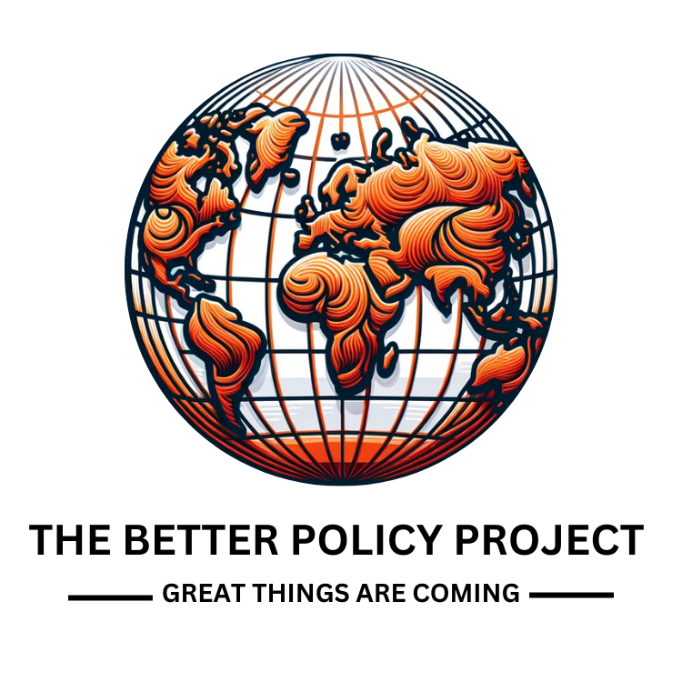

FPAS Mark II:
The Least-Regrets Mindset
Note
FPAS Mark II represents a major evolution in Armenia’s monetary policy framework. Building on global lessons from the failures of monetary targeting and the limitations of early inflation-targeting systems, FPAS Mark II introduces a least-regrets decision-making approach.
Rather than relying on a single forecast, FPAS Mark II evaluates policies across multiple scenarios— including adverse ones—to choose actions that minimize the risk of policy mistakes. This mindset strengthens credibility, supports forward-looking policymaking, and anchors expectations more effectively.
The approach integrates clear communication, structured scenario analysis, and rigorous model-based evaluation. It is at the core of Armenia’s modern Prudent Risk Management framework.
Audio
Prefer listening? Play the audio version.
Video
Literature & Further Reading
- Bernanke, B. (2024). Forecasting for Monetary Policy Making and Communication at the Bank of England: A Review. Bank of England Independent Evaluation Office.
- Archer, D., Galstyan, M., & Laxton, D. (2022). FPAS Mark II: Avoiding Dark Corners and Eliminating the Folly in Baselines and Local Approximations. Central Bank of Armenia Working Paper 2022/03.
- Laxton, D., Galstyan, M., & Avagyan, V. (eds.) (2025). The Prudent Risk Management Approach to Monetary Policy. Central Bank of Armenia.
- Friedman, M. (1968). “The Role of Monetary Policy.” American Economic Review, 58(1), 1–17.
- Phelps, E. (1968). “Money-Wage Dynamics and Labor Market Equilibrium.” Journal of Political Economy, 76(4), 678–711.
- Debelle, G., & Laxton, D. (1996). Is the Phillips Curve Really a Curve? Some Evidence for Australia. IMF Working Paper 96/37.
- Debelle, G., & Laxton, D. (1997). “Is the Phillips Curve Really Convex?” IMF Staff Papers, 44(2), 249–282.
- Debelle, G., & Fischer, S. (1994). “How Independent Should a Central Bank Be?” In Goals, Guidelines, and Constraints Facing Monetary Policymakers.
- Freedman, C., & Laxton, D. (2009). “Why Inflation Targeting?” IMF Working Paper 09/86.
- Haworth, C., Kostanyan, A., & Laxton, D. (2019). “Transparent Monetary Policy: A History of Inflation Targeting in New Zealand.” LSE Institute of Global Affairs.
- Central Bank of Armenia. (2025). CBA Academy Onboarding Platform: Monetary Policy. Yerevan.